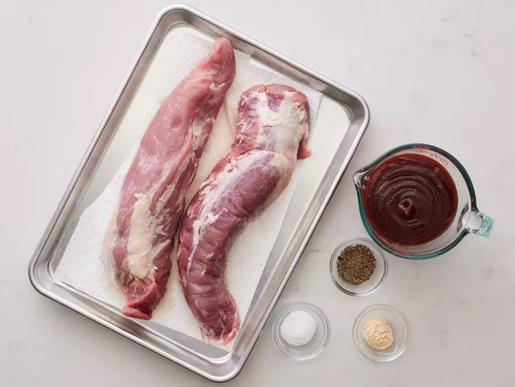

This grilled pork tenderloin is cooked over indirect heat and basted with barbecue sauce. My family loves when I make this recipe. The pork is always tender, juicy, and flavorful! Serve with additional barbecue sauce for dipping.
The pork tenderloin is simply seasoned with garlic powder, salt, and black pepper before grilling. While grilling, the pork is basted with barbecue sauce (you can use store-bought or homemade barbecue sauce).
Here’s a brief overview of what you can expect when you cook pork tenderloin on the grill:
On a grill preheated to medium heat, the pork tenderloin should be fully cooked after about 30 minutes over indirect heat. You’ll know the pork is done when an instant read thermometer inserted into the center reads at least 145 degrees F.
Gather all ingredients.
 Step 2Preheat an outdoor grill for medium, indirect heat and lightly oil the grate.
Step 3Season tenderloins with garlic powder, salt, and pepper. Place 1/2 of the barbecue sauce into a small bowl for basting; set aside remaining barbecue sauce for serving.
Cook pork on the preheated grill over indirect heat for 30 minutes.
Brush pork with barbecue sauce, turn, and brush again, using all sauce in the small bowl. Continue cooking until an instant-read thermometer inserted into the center reads 145 degrees F (63 degrees C), about 15 more minutes. Let pork rest for 10 minutes.
Slice pork and serve with reserved barbecue sauce